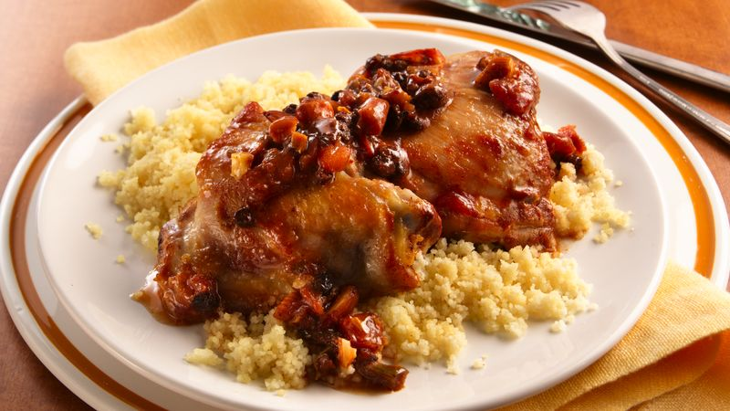

Salsa Couscous Chicken

Salsa Couscous Chicken
Pillsbury's million dollar bakeoff winner from 1998, it's the closest thing to "American curry" we can think of. Something about its
blending sweet with savory and succulent with crunchy makes this a standout any night of the week.
Ingredients
- 3 cups hot cooked couscous or rice
- 1 tablespoon oil
- 1/4 cup coarsely chopped almonds
- 2 garlic cloves, minced
- 8 chicken thighs, skin removed
- 1 cup Old El Paso™ Salsa
- 1/4 cup water
- 2 tablespoons dried currants or raisins
- 1 tablespoon honey
- 3/4 teaspoon cumin
- 1/2 teaspoon cinnamon
Steps
- Cook couscous as directed on package.
- Meanwhile, heat oil in large skillet over medium-high heat until hot. Add almonds; cook 1 to 2 minutes or until golden brown. Remove from skillet; set aside.
- Add garlic and chicken to skillet; cook 4 to 5 minutes until chicken is browned, turning once.
- In small bowl, combine salsa and all remaining ingredients; mix well. Add to chicken. Reduce heat to medium; cover and cook 20 minutes or until chicken is no longer pink, stirring occasionally.
- Stir in almonds. Serve over couscous.